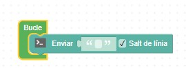

Objectius d'Aprenentatge
- Comprendre la utilitat dels sensors i actuadors en la domòtica domèstica.
- Aprendre a crear, assignar i comparar variables per emmagatzemar dades.
- Desenvolupar diagrames de flux bàsics i condicions amb lògica comparativa.
- Integrar sistemes de seguretat ambiental a la llar mitjançant operadors lògics.
Materials Necessaris
- Placa amb microcontrolador (Arduino UNO)
- Sensor de Temp. i Humitat (DHT-11)
- Sensor de CO2/TVOC (CCS811)
- Sensor de So Analògic (STEAMakers)
- 3 x LEDs (Llums de la casa) i 1 x Pulsador
- Brunzidor piezoelèctric (Timbre)
Descripció del Projecte
El repte consisteix a programar el sistema de control centralitzat d'una Casa Domòtica. Els alumnes hauran de muntar, programar i comprovar tres sistemes diferents que formen la llar del futur: un timbre sonor a l'entrada, un llum que s'encén automàticament en detectar un soroll (com una picada de mans), i un panell de confort climàtic que vigila la temperatura, la humitat i els nivells d'aire net (CO2).

Muntatge i Connexions
Assegureu-vos de connectar cada cable de la vostra maqueta exactament als pins descrits a continuació:
| Component Maqueta | Pin Arduino | Tipus de Senyal |
|---|---|---|
| LED d'Alerta Vermell | Pin 2 | Sortida Digital |
| LED de Confort Verd | Pin 3 | Sortida Digital |
| Sensor de Temperatura i Humitat DHT11 | Pin 4 | Entrada de Dades |
| Pulsador del Timbre | Pin 6 | Entrada Digital |
| LED de l'Habitació (Llum de So) | Pin 7 | Sortida Digital |
| Brunzidor Piezo (Buzzer) | Pin 13 | Sortida Digital |
| Sensor de So Analògic | Pin A1 | Entrada Analògica |
| Sensor CO2 CCS811 | Port I2C | Bus Comunicació |

Guia de Colors i Tipologia de Blocs
Els blocs fonamentals d'estructura del programa. El bloc Bucle repetirà infinitament totes les ordres que hi col·loquis a dins.
Controla la velocitat del flux i conté les aturades de temps del programa per mantenir els estats de forma temporal.
Permet avaluar si s'està complint o no algun requisit o condició (comprovació condicional).
Entrades digitals i analògiques per llegir dades físiques dels components de la maqueta.
Envia senyals elèctrics de sortida per fer reaccionar físicament els components connectats.
Aporta nombres enters, decimals i operadors aritmètics bàsics per poder calcular i comparar llindars físics.
Envia dades i missatges des de la placa cap a la pantalla.
Crea magatzems de dades per desar variables i simplificar el codi.
Exercici d'Escalfament: Provant el LED Vermell (Pin 2)
Abans d'enfrontar-nos als reptes de la casa, farem una prova ràpida per comprovar la càrrega encenent el LED vermell del Pin 2 al bucle principal amb l'estat en format digital:
Si el LED vermell de la teva placa s'encén correctament després de prémer Puja, la teva maqueta ja està llista!
Ampliació i Reptes Opcionals
Un cop hagueu acabat amb èxit els tres reptes de programació anteriors, trieu i desenvolupeu les següents ampliacions d'automatització a la vostra casa domòtica:
-
Visualització de Dades per Consola Sèrie:
Per comprovar si el programa funciona correctament, podeu mostrar per consola els valors en temps real de les dades de temperatura, humitat relativa i CO2. Fes servir aquest bloc i el botó de consola:
Bloc real de transmissió de text'">

No es troba la imatge local "image_304de7.png". - Nova lògica de seguretat climàtica avançada: Modifica l'ordre de decisió condicional de la casa perquè l'alerta de risc ambiental (LED Vermell d'alerta actiu) salti exclusivament si el CO2 és superior a 1000 ppm, O si la temperatura és superior a 25 ºC i la humitat relativa és superior al 65% a la vegada.
- Millores personalitzades de disseny: Programa alguna millora lliure a la teva casa domòtica.